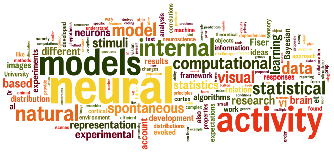

Pietro BerkesPrincipal Data Scientis at Nagra, KudelskiLausanne, Switzerland |
| 13.01.2019: | I moved this home page to Github. The content is outdated, but I'll fix that one step at the time |
| 04.05.2016: | Our paper about an interpretation of neural observations during decision making, based on the "neural sampling" hypothesis, has been published in Neuron. |
| 22.01.2013: | At Cosyne 2013 we will present three new results regarding the sampling hypothesis. In particular, Cristina Savin will present new data and new analyses extending our previous results on the interpretation of spontaneous activity as samples from a prior distribution |
| 07.02.2012: | I updated the publications page with the NIPS paper, and some new conference contributions. |
| 18.01.2012: | Ralf Haefner will be at Cosyne 2012 presenting some really cool results about the meaning of attention in a sampling-based framework of the sensory system. |
| 30.11.2011: | As part of my new job at Enthought, I developed an open source library to analyze data annotated by multiple users. Check it out! |
In September 2011 I started a new career as scientific software developer at Enthought in Cambridge, UK. This pages contain my past (and present) academic work.
My main research interest concerns the way the brain forms a high-level representation of the environment from raw sensory input and without supervision. I approach this problem at a computational level in the framework of Bayesian statistical inference and learning. I like to work from different perspectives, using machine learning models and analysis of electrophysiological data. My goal is to understand how neuronal populations support these probabilistic computations, what are the principles that guide their adaptation to the statistics of the environment, and how their final representation of the world is organized.

Publications - Software - Curriculum Vitae
Upcoming meetings
(Past meetings)- Advanced Scientific Programming in Python summer school in Zurich, Switzerland (September, 2013).
- Advanced Scientific Programming in Python summer school in Kiel, Germany (September 2-7, 2012).
- Advanced Scientific Programming in Python summer school in St Andrews, UK (September 11-16, 2011).
- Advanced scientific programming in Python autumn school in Trento, Italy.
Research projects
- No evidence for active sparsification in primary visual cortex
- Evidence for statistically optimal inference and learning in the visual cortex
- Characterizing neural dependencies with Poisson copula models
- On sparsity and overcompleteness in image models
- Structured representations in the visual cortex
- Relation between Slow Feature Analysis and Independent Component Analysis
- Analysis and interpretation of inhomogeneous quadratic forms as receptive fields
- Slowness as a computational principle for the visual cortex
Bonus tracks
- Promoting transparency in science
- A bibliography of slowness
- masterbaboon.com: Artificial Life, Artificial Intelligence, and games